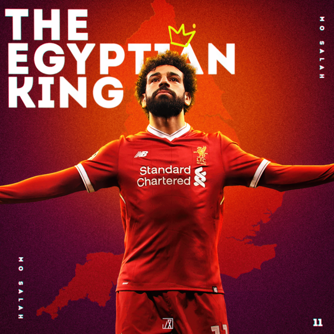

Mohamed Salah: The Egyptian Messi
|  |
Quote"I always try to see my weakness, work on it, to be better as a person and a player, everything. I miss many chances but I always keep trying, and sometimes you score easy goals or difficult goals, but in the end, I am trying to score. Every year, every day, every month, I am improving myself. " |
Website's Purpose
Welcome to my website about Mohammad Salah. We are both Egyptian and he's become a great role model to me because of his mindset, discipline, and perseverance. I've always aspired to be like him and hope to one day reach his level of work ethic. Every day he tries to train himself to be better than his previous self, and for him to not just think this, but to put the mindset to work is why I chose him to be the subject of the website. He not only is so talented and hardworking in soccer but also shares his success with his people and hometown. Get ready and prepare yourself for a journey through Mohammad Salah's life by clicking on the Biography tab on top. After reading about it, you can continue to learn more about Mohammad Salah's, career, accomplishments, playing style, training, diet, and his impact on his home country and surroundings.
About Me
As an Egyptian, Salah's remarkable mindset, discipline, and perseverance have made him an important role model in my life and for many other Egyptians as well. I've chosen to make this website precisely about him because of his exceptional mindset that he puts into action every day and the amount of characteristics we have in common. We both aspire to be great soccer players, we are both Egyptian, and I attempt to have a high level of discipline like him. Beyond his exceptional talent and hard work in soccer, Salah's commitment to sharing his success with both his people and our shared homeland, Egypt, connects me with him on an even deeper level as well. The Egyptian King will always remain a kind leader for me and all the citizens of Egypt to support because of the characteristics he displays both when he is on and off the field.